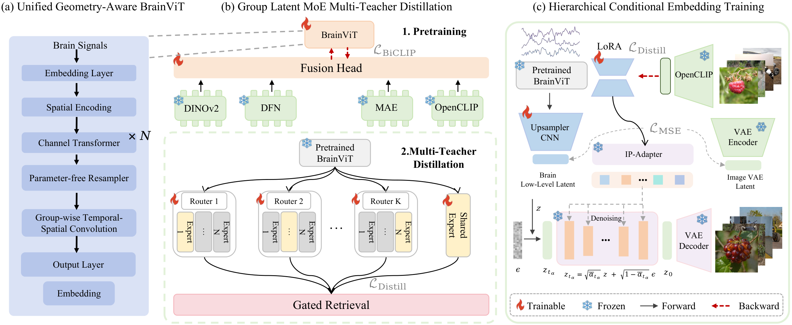
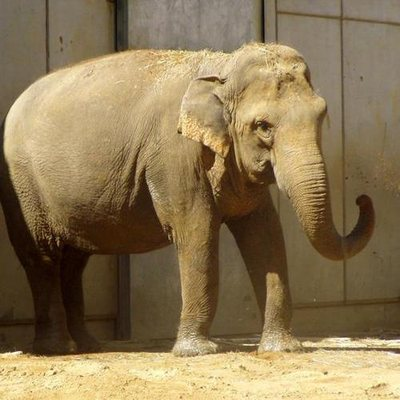
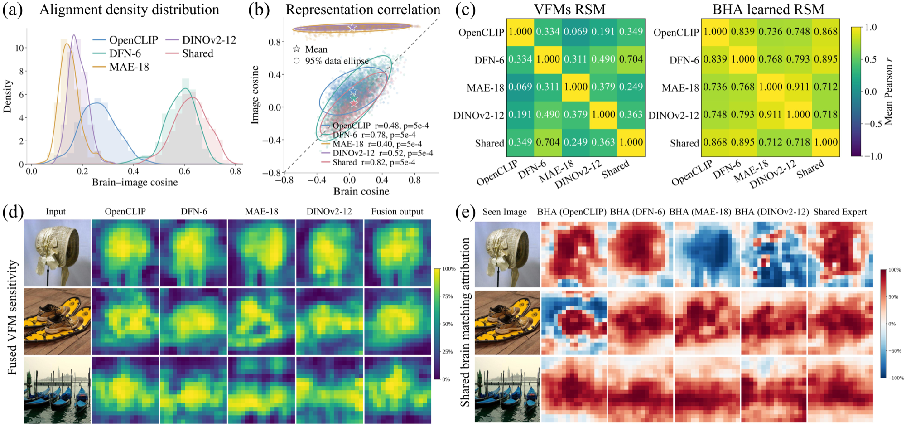

Data-efficient
Gains hold with a quarter of a participant’s training data, shortening calibration sessions.
Real EEG · participant 08 · THINGS-EEG2
Decoding what a person sees from non-invasive brain recordings — by teaching one brain model to think like four vision models at once.
01 — The idea
Modern brain decoders do not predict pixels. They predict the features a pretrained vision model would compute for the image a person is looking at, then search or generate from those features. Which model to imitate is the central design decision — and CLIP-style, self-supervised and masked-autoencoder models each see an image differently.
BHA stops choosing. One brain encoder learns a representation that four vision teachers supervise together. At decision time the teachers’ distinct notions of similarity are kept alive and composed, instead of collapsed into a single fused space. The same backbone then drives a frozen image generator — no generator fine-tuning.
Stage 1 trains the encoder with all four teachers. Stage 2 freezes it and learns how to weigh each teacher per query.

02 — Results
200-way brain-to-image retrieval, within-subject Top-1 accuracy. Averages over ten EEG and four MEG participants on the public THINGS benchmarks. Bars show raw scores; the hatched extension is BHA with CSLS-2 re-scoring.
Ten-participant means on THINGS-EEG2 against the strongest published EEG method. Higher is better.
| Method | EEG | MEG | ||||||
|---|---|---|---|---|---|---|---|---|
| Within | LOSO | Within | LOSO | |||||
| NICE | 16.1 | 43.6 | 6.2 | 21.4 | 12.8 | 36.0 | – | – |
| ATM-S | 28.5 | 60.4 | 11.9 | 33.8 | – | – | – | – |
| UBP | 50.9 | 79.7 | 12.4 | 33.4 | 26.7 | 55.2 | 2.2 | 10.4 |
| HyFI | 68.2 | 91.9 | 15.1 | 37.2 | 35.8 | 64.6 | 3.2 | 11.5 |
| NeuroBridge | 63.2 | 89.9 | 19.0 | 45.9 | 32.2 | 60.8 | 3.4 | 12.8 |
| MBP | 75.7 | 94.6 | 20.0 | 44.1 | 33.9 | 60.7 | 5.4 | 15.2 |
| LVBP | 80.0 | 96.9 | 20.0 | 48.0 | 44.0 | 72.0 | 5.3 | 15.9 |
| DMSA | 82.6 | 97.7 | 21.8 | 49.4 | 48.0 | 74.4 | 3.7 | 13.0 |
| BHA · Raw | 87.0 | 98.5 | 22.5 | 51.6 | 55.6 | 85.8 | 3.6 | 12.8 |
| BHA · CSLS-2 | 93.9 | 99.7 | 30.4 | 63.4 | 68.1 | 91.4 | 5.3 | 16.5 |
| Method | Low-level | High-level | ||||||
|---|---|---|---|---|---|---|---|---|
| PixCorr ↑ | SSIM ↑ | AlexNet(2) ↑ | AlexNet(5) ↑ | Inception ↑ | CLIP ↑ | EffNet-B ↓ | SwAV ↓ | |
| ATM-S | 0.130 | 0.339 | 0.740 | 0.822 | 0.685 | 0.716 | – | 0.599 |
| CC-All | 0.143 | 0.347 | 0.754 | 0.623 | 0.669 | 0.715 | – | 0.590 |
| AVDE | 0.147 | 0.366 | 0.766 | 0.835 | 0.724 | 0.747 | – | 0.587 |
| MBP | 0.195 | 0.336 | 0.843 | 0.905 | 0.756 | 0.808 | – | 0.554 |
| BHA | 0.277 | 0.454 | 0.874 | 0.922 | 0.791 | 0.830 | 0.845 | 0.516 |
| BHA + VAE-guided | 0.283 | 0.464 | 0.874 | 0.921 | 0.790 | 0.830 | 0.845 | 0.515 |
03 — Decoded
Every image below was generated from one participant’s EEG response to a photograph they had never seen during training. Drag the slider, or hover a tile to flip between the seen image and three independent decodes.

Participant 08, THINGS-EEG2 test set. Decodes use the main-table configuration: semantic + spatial conditioning of a frozen SDXL-Turbo generator.
04 — Data efficiency
Composing teacher-specific scores on top of the shared representation lifts within-subject EEG accuracy at every training-data scale. With 25% of a participant’s data the gated readout reaches 53.3% Top-1, against 42.7% for the pretrained backbone alone.
Recording sessions are short and expensive. Needing fewer of them is the difference between a lab demo and a product.
05 — Inside the model
Because BHA keeps teacher-specific prediction spaces, its decisions can be attributed. Occlusion maps show which image regions each expert uses to match a brain response; concept analysis shows individual model neurons becoming selective for food, clothing or animals.


06 — Why it matters
Gains hold with a quarter of a participant’s training data, shortening calibration sessions.
The image generator stays frozen. Better generators drop in without retraining the brain model.
One recipe runs on 63-channel EEG and 271-channel MEG; only the input tokenizer changes.
Attribution maps and concept-selective neurons expose what the decoder relies on — essential for clinical and consumer use.
07 — Status